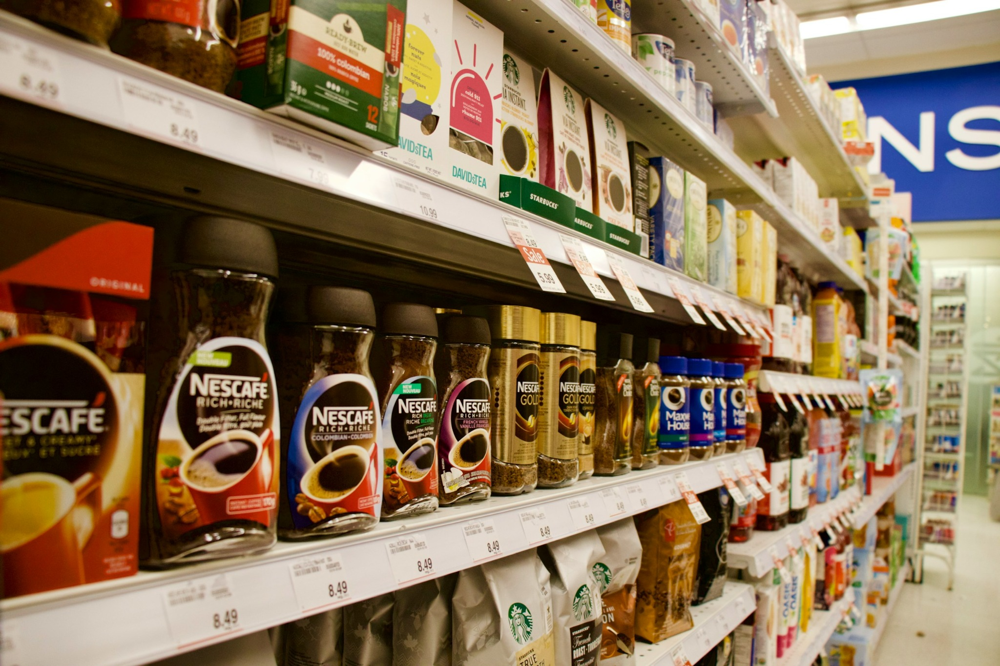
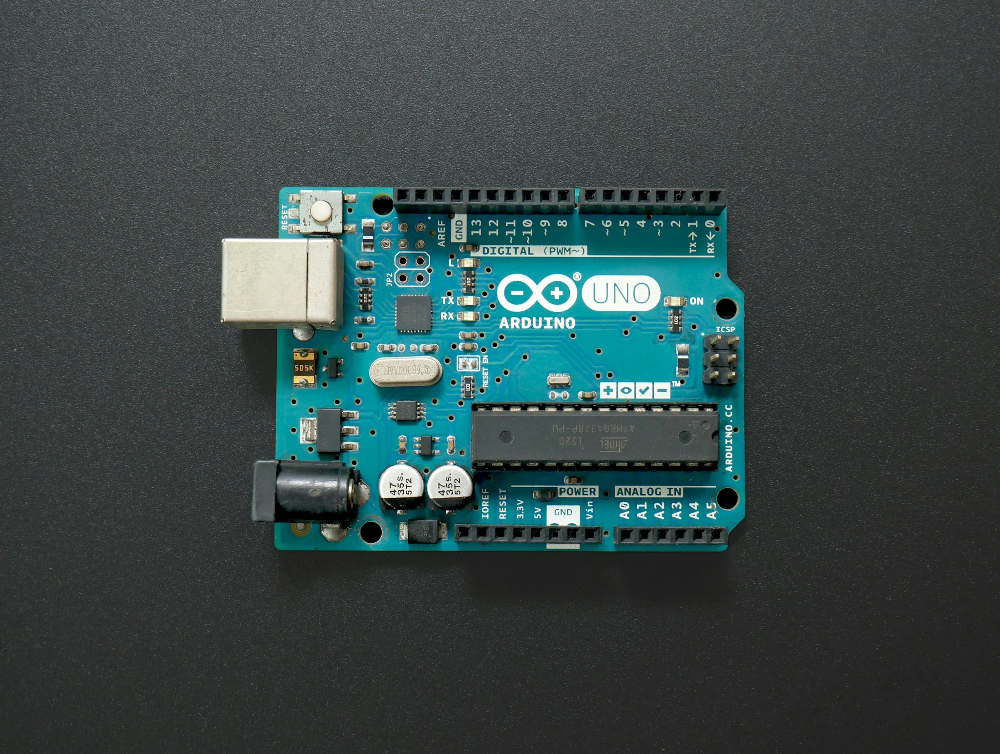
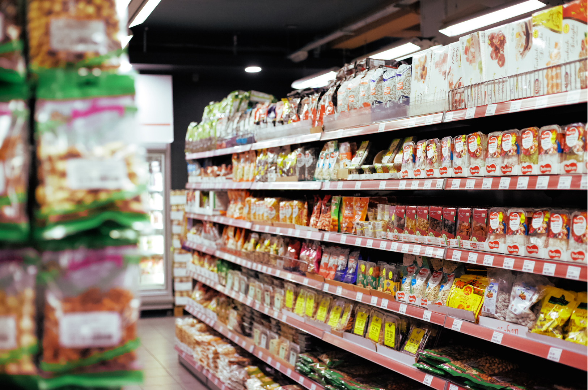
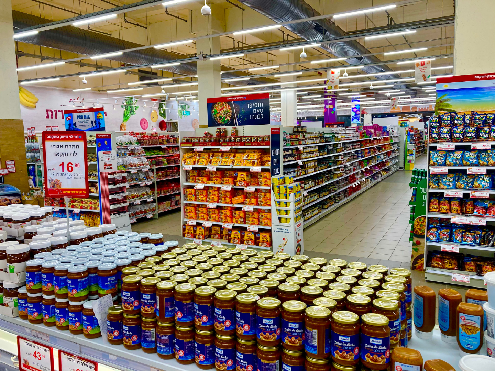

Transforme dados de fluxo em
vantagem competitiva
para seu negócio.
Monitore o comportamento do seu consumidor nas prateleiras
com tecnologia acessível.
Como o InfoConnect funciona?



Sensores de proximidade instalados na gôndola captam quando um cliente se aproxima ou interage com o produto — sem câmeras e sem nenhum traço identificável da pessoa. Uma placa com microcontrolador processa esses dados, transformando o movimento em informação: quantas pessoas pararam, por quanto tempo e se houve contato com o item. O resultado chega a um painel simples, com o comportamento agregado por produto — sem biometria, sem reconhecimento facial, dentro da LGPD.
Nossos serviços
Três frentes de monitoramento integradas na mesma solução para entender o comportamento do consumidor no ponto de venda.
1. Fluxo de aproximação
Cada vez que um cliente se aproxima de uma gôndola, ele deixa um
sinal — mesmo sem tocar em nada.
O InfoConnect capta esse movimento por meio de sensores simples,
sem câmeras e sem reconhecimento de imagem, transformando o que
antes era invisível em um dado real sobre o que desperta o
interesse do consumidor dentro da loja.


2. Tempo de atenção
Não basta saber que o cliente parou — é preciso entender por quanto tempo ele ficou ali, avaliando, comparando, decidindo. Esse tempo de permanência revela o que realmente prende a atenção na prateleira, uma informação que os dados de venda tradicionais nunca conseguem mostrar sozinhos.
3. Integração física
Cada gesto do cliente diante da gôndola indica intenção de compra. Sensores conectados a um Arduino detectam a aproximação e a permanência em frente a cada produto, e enviam os registros para a API, que os guarda no banco de dados. Com esse histórico, o supermercado descobre quais produtos atraem mais atenção, em quais horários o fluxo é maior e como a disposição das mercadorias influencia a compra.